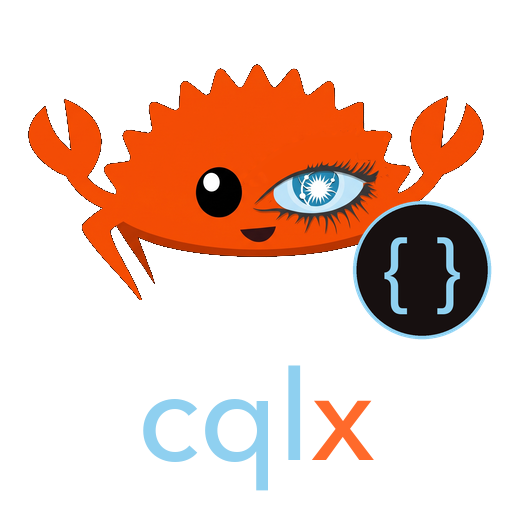

cqlx
A typesafe, zero-overhead, code-first ORM for ScyllaDB and Cassandra, built on procedural macros. The code-first counterpart to cqlc.
A struct is the schema
use cqlx::scylla::DeserializeRow;
use cqlx::{CqlEntity, CqlModel, Session};
#[derive(CqlEntity, DeserializeRow, Debug)]
#[cqlx(table_name = "events", keyspace = "app")]
struct Event {
#[cqlx(partition_key)] tenant: String,
#[cqlx(partition_key)] day: i32,
#[cqlx(clustering_key(order = "desc"))] ts: i64,
#[cqlx(rename = "payload")] body: String,
}
let session = Session::connect("127.0.0.1:9042").await?;
session.create_table::<Event>().await?;
session.insert(&event).await?;
let rows = Event::query()
.tenant("acme".into()) // EventQuery<Missing, Missing> → <Provided, Missing>
.day(7) // → <Provided, Provided>
.ts_gt(0)
.limit(10)
.fetch(&session) // only exists once every partition key is Provided
.await?;The compiler enforces the partition key
The macro generates a builder whose type parameters track which partition key columns are set. fetch, build and delete exist only when all of them are Provided.
let _ = Event::query().tenant("acme".into()).build();
error[E0599]: no method named `build` found for struct `EventQuery<Provided, Missing>`
= note: the method was found for `EventQuery<Provided, Provided>`This is a real compiler message from the project's trybuild test suite. Clustering restrictions (_eq, _gt, _ge, _lt, _le) are validated when the statement is built: a prefix of the clustering columns with =, then at most one range.
Production feature set
| Area | API |
|---|---|
| Reads | type-state query(): partition keys (=/_in), clustering _eq/_gt/_ge/_lt/_le/_in, limit, reverse, fetch, first, count, stream, paging, per-query consistency |
| Partial updates | update() needs the full primary key and one assignment: set_*, add_*/remove_* for collections, increment_* for counters, ttl, timestamp |
| Lightweight transactions | insert_with(.. if_not_exists), update().if_exists(), if_<col>_eq(..) return whether the write was applied |
| Batches and streaming | batch(Logged|Unlogged|Counter), stream() over millions of rows |
| Schema | validate_schema reports drift, migrate creates tables and adds columns, never drops or retypes |
| Safety | no fetch without the partition key, no update without key and assignment, no insert into counter tables, non-key filters only after allow_filtering(): all compile errors |
The integration suite (inserts, partial updates, collections, counters, TTL, LWTs, batches, 1,000-row streaming, schema migration) runs against ScyllaDB, Apache Cassandra 5.0 and 4.1. Statements are rendered at compile time as &'static str constants; at runtime a query only assembles restrictions and bind values. YCSB numbers against the raw driver and charybdis.
Schema tooling
cargo install cqlx-cli
cqlx schema src/ --keyspaces # CREATE KEYSPACE/TABLE for every #[derive(CqlEntity)]
cqlx diff src/ --schema schema.cql # ALTER TABLE … ADD, plus warnings for what CQL cannot alterThe existing schema is read with cqlc-core's CQL parser, so the same .cql files work with cqlc.